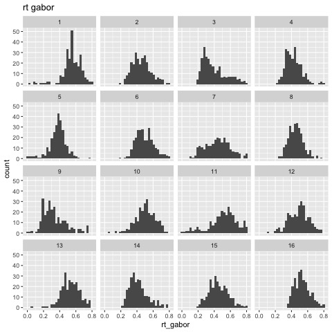
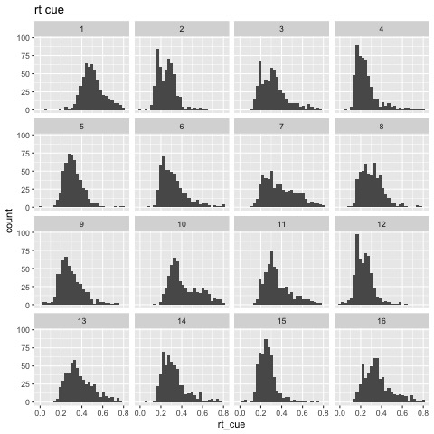
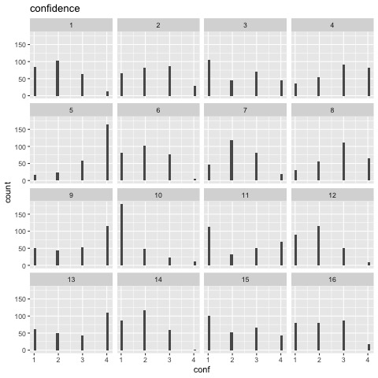
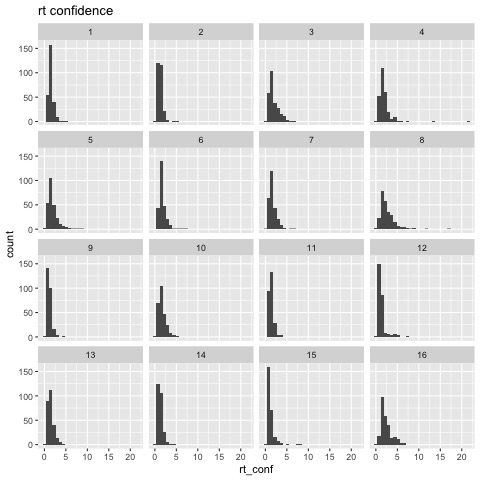
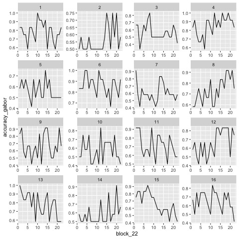
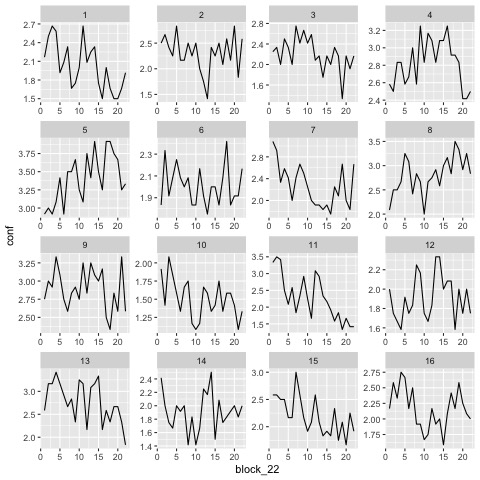

Motor Gabor
1 Preparation
First, a bit of data cleaning and contrasts definitions.
rm(list=ls(all=TRUE)) ## efface les données source('~/thib/projects/tools/R_lib.r') setwd('~/thib/projects/motor_gabor/data/AG_data/') load('data_final.rda') data_complete <- data %>% mutate(block_22 = rep(sort(rep(1:22,36) , decreasing = FALSE),16)) %>% mutate(rt_gabor = ifelse(rt_gabor <0, NA, rt_gabor)) %>% mutate(rt_cue = ifelse(rt_cue <0, NA, rt_cue)) %>% mutate(rt_conf = ifelse(rt_conf <0, NA, rt_conf)) %>% mutate(conf = ifelse(conf <0, NA, conf)) %>% mutate(accuracy_cue = ifelse(accuracy_cue <0, NA, accuracy_cue)) %>% mutate(accuracy_gabor = ifelse(accuracy_gabor <0, NA, accuracy_gabor)) %>% mutate(expected_gabor = ifelse(expected_gabor <0, NA, expected_gabor)) %>% mutate(pressed_gabor = ifelse(pressed_gabor <0, NA, pressed_gabor)) %>% mutate(gabor.contrast = ifelse(gabor.contrast <0, NA, gabor.contrast)) %>% mutate(pressed_cue = ifelse(pressed_cue =="-1", NA, pressed_cue)) %>% mutate(expected_cue = ifelse(expected_cue =="-1", NA, expected_cue)) %>% mutate(congruency = ifelse(congruency =="none", NA, congruency)) %>% mutate(effector_order = case_when(effector_order == 'feet2' | effector_order == 'hand1' ~ 'hand1', effector_order == 'hand2' | effector_order == 'feet1' ~ 'feet1')) %>% select(-c(trial_start_time_rel2bloc, bloc_start_time_rel2exp, exp_start_date, pressed_conf)) data <- data_complete %>% filter(!is.na(rt_gabor)) ## define contrasts data$acc_gabor_num <- data$accuracy_gabor ## on garde la variable 0/1 pour l'analyse de accuracy data$accuracy_gabor <- as.factor(data$accuracy_gabor) contrasts(data$accuracy_gabor) <- - contr.sum(2) ## erreur: -1; correct: 1 data$acc_cue_num <- data$accuracy_cue data$effector <- as.factor(data$effector) contrasts(data$effector) <- -contr.sum(2) ## feet: -1; hand: 1 data$condition <- as.factor(data$condition) data$effector_order <- as.factor(data$effector_order) contrasts(data$effector_order) <- contr.sum(2) ## hand1: -1; feet: 1 data$congruency <- as.factor(data$congruency) contrasts(data$congruency) <- contr.sum(2) ## incongruent: -1; congruent: 1
2 Descriptive statistics
| subject_id | accuracy_gabor | accuracy_cue | conf | rt_gabor | rt_cue | |
|---|---|---|---|---|---|---|
| 1 | 1 | 0.78 | 0.96 | 2.02 | 0.55 | 0.50 |
| 2 | 3 | 0.56 | 0.97 | 2.20 | 0.40 | 0.32 |
| 3 | 5 | 0.56 | 0.99 | 3.41 | 0.38 | 0.32 |
| 4 | 7 | 0.61 | 0.96 | 2.27 | 0.44 | 0.38 |
| 5 | 9 | 0.67 | 0.96 | 2.89 | 0.33 | 0.30 |
| 6 | 11 | 0.72 | 0.95 | 2.28 | 0.51 | 0.36 |
| 7 | 13 | 0.78 | 0.92 | 2.77 | 0.53 | 0.38 |
| 8 | 15 | 0.67 | 0.96 | 2.20 | 0.45 | 0.26 |
Feet first:
| subject_id | accuracy_gabor | accuracy_cue | conf | rt_gabor | rt_cue | |
|---|---|---|---|---|---|---|
| 1 | 2 | 0.56 | 0.99 | 2.30 | 0.45 | 0.26 |
| 2 | 4 | 0.85 | 0.98 | 2.83 | 0.42 | 0.25 |
| 3 | 6 | 0.86 | 0.96 | 2.01 | 0.50 | 0.32 |
| 4 | 8 | 0.73 | 0.96 | 2.81 | 0.45 | 0.31 |
| 5 | 10 | 0.57 | 0.95 | 1.50 | 0.50 | 0.42 |
| 6 | 12 | 0.66 | 1.00 | 1.91 | 0.49 | 0.23 |
| 7 | 14 | 0.58 | 0.98 | 1.91 | 0.42 | 0.32 |
| 8 | 16 | 0.65 | 0.95 | 2.17 | 0.53 | 0.36 |
Hands first:






3 Accuracy
data$rt_gabor_centered <- data$rt_gabor - mean(data$rt_gabor, na.rm = TRUE) l.acc <- lmer_alt(acc_gabor_num ~ congruency * effector * effector_order * rt_gabor_centered + (1 + congruency * effector + effector_order + rt_gabor_centered ||subject_id), family = binomial(link = "logit"), data = data %>% filter(is.na(accuracy_gabor) == FALSE)) summary(l.acc)
boundary (singular) fit: see ?isSingular
Generalized linear mixed model fit by maximum likelihood (Laplace Approximation) ['glmerMod']
Family: binomial ( logit )
Formula: acc_gabor_num ~ congruency * effector * effector_order * rt_gabor_centered +
(1 + re1.congruency1 + re1.effector1 + re1.effector_order1 + re1.rt_gabor_centered + re1.congruency1_by_effector1 ||
subject_id)
Data: data
AIC BIC logLik deviance df.resid
5169.2 5308.9 -2562.6 5125.2 4202
Scaled residuals:
Min 1Q Median 3Q Max
-2.7885 -1.1314 0.5285 0.7408 1.1532
Random effects:
Groups Name Variance Std.Dev.
subject_id (Intercept) 0.12009 0.3465
subject_id.1 re1.congruency1 0.00000 0.0000
subject_id.2 re1.effector1 0.02637 0.1624
subject_id.3 re1.effector_order1 0.08904 0.2984
subject_id.4 re1.rt_gabor_centered 0.51401 0.7169
subject_id.5 re1.congruency1_by_effector1 0.00000 0.0000
Number of obs: 4224, groups: subject_id, 16
Fixed effects:
Estimate Std. Error z value Pr(>|z|)
(Intercept) 0.808060 0.120328 6.716 1.87e-11 ***
congruency1 -0.005295 0.035357 -0.150 0.88096
effector1 0.126687 0.054321 2.332 0.01969 *
effector_order1 0.033819 0.120320 0.281 0.77865
rt_gabor_centered 0.637832 0.350717 1.819 0.06896 .
congruency1:effector1 0.009055 0.035334 0.256 0.79774
congruency1:effector_order1 0.034620 0.035337 0.980 0.32723
effector1:effector_order1 0.057382 0.054345 1.056 0.29102
congruency1:rt_gabor_centered -0.221728 0.271655 -0.816 0.41438
effector1:rt_gabor_centered -0.034252 0.288061 -0.119 0.90535
effector_order1:rt_gabor_centered -0.974595 0.350368 -2.782 0.00541 **
congruency1:effector1:effector_order1 -0.010548 0.035332 -0.299 0.76530
congruency1:effector1:rt_gabor_centered 0.153911 0.271702 0.566 0.57107
congruency1:effector_order1:rt_gabor_centered -0.066212 0.271624 -0.244 0.80741
effector1:effector_order1:rt_gabor_centered 0.120619 0.292788 0.412 0.68036
congruency1:effector1:effector_order1:rt_gabor_centered 0.009132 0.271461 0.034 0.97317
---
Signif. codes: 0 ‘***’ 0.001 ‘**’ 0.01 ‘*’ 0.05 ‘.’ 0.1 ‘ ’ 1
Correlation matrix not shown by default, as p =
12.
Use print(x, correlation=TRUE) or
vcov(x) if you need it
optimizer (Nelder_Mead) convergence code: 0 (OK)
boundary (singular) fit: see ?isSingular
There is a convergence singularity issue. Let's look at PCA (see https://rstudio-pubs-static.s3.amazonaws.com/93724_cb12da92849941b993e3a135f6298cef.html).
summary(rePCA(l.acc))
$subject_id
Importance of components:
[,1] [,2] [,3] [,4] [,5] [,6]
Standard deviation 0.7169 0.3465 0.2984 0.16238 0 0
Proportion of Variance 0.6858 0.1602 0.1188 0.03518 0 0
Cumulative Proportion 0.6858 0.8460 0.9648 1.00000 1 1
2 components contribute less than 1%. So we suppress congruency:effector and congruency.
l.acc2 <- lmer_alt(acc_gabor_num ~ congruency * effector * effector_order * rt_gabor_centered + (1 + effector + effector_order + rt_gabor_centered ||subject_id), family = binomial(link = "logit"), data = data %>% filter(is.na(accuracy_gabor) == FALSE)) summary(l.acc2)
Warning messages:
1: In checkConv(attr(opt, "derivs"), opt$par, ctrl = control$checkConv, :
unable to evaluate scaled gradient
2: In checkConv(attr(opt, "derivs"), opt$par, ctrl = control$checkConv, :
Model failed to converge: degenerate Hessian with 1 negative eigenvalues
Generalized linear mixed model fit by maximum likelihood (Laplace Approximation) ['glmerMod']
Family: binomial ( logit )
Formula: acc_gabor_num ~ congruency * effector * effector_order * rt_gabor_centered +
(1 + re1.effector1 + re1.effector_order1 + re1.rt_gabor_centered || subject_id)
Data: data
AIC BIC logLik deviance df.resid
5165.2 5292.2 -2562.6 5125.2 4204
Scaled residuals:
Min 1Q Median 3Q Max
-2.7885 -1.1314 0.5285 0.7408 1.1532
Random effects:
Groups Name Variance Std.Dev.
subject_id (Intercept) 0.15119 0.3888
subject_id.1 re1.effector1 0.02637 0.1624
subject_id.2 re1.effector_order1 0.05793 0.2407
subject_id.3 re1.rt_gabor_centered 0.51409 0.7170
Number of obs: 4224, groups: subject_id, 16
Fixed effects:
Estimate Std. Error z value Pr(>|z|)
(Intercept) 0.808061 0.120327 6.716 1.87e-11 ***
congruency1 -0.005296 0.035357 -0.150 0.88094
effector1 0.126680 0.054322 2.332 0.01970 *
effector_order1 0.033840 0.120319 0.281 0.77852
rt_gabor_centered 0.637744 0.350766 1.818 0.06904 .
congruency1:effector1 0.009056 0.035334 0.256 0.79772
congruency1:effector_order1 0.034618 0.035337 0.980 0.32725
effector1:effector_order1 0.057391 0.054346 1.056 0.29096
congruency1:rt_gabor_centered -0.221710 0.271656 -0.816 0.41442
effector1:rt_gabor_centered -0.034257 0.288089 -0.119 0.90535
effector_order1:rt_gabor_centered -0.974690 0.350415 -2.782 0.00541 **
congruency1:effector1:effector_order1 -0.010546 0.035332 -0.298 0.76533
congruency1:effector1:rt_gabor_centered 0.153943 0.271716 0.567 0.57102
congruency1:effector_order1:rt_gabor_centered -0.066282 0.271624 -0.244 0.80721
effector1:effector_order1:rt_gabor_centered 0.120636 0.292820 0.412 0.68035
congruency1:effector1:effector_order1:rt_gabor_centered 0.009119 0.271479 0.034 0.97320
---
Signif. codes: 0 ‘***’ 0.001 ‘**’ 0.01 ‘*’ 0.05 ‘.’ 0.1 ‘ ’ 1
Correlation matrix not shown by default, as p =
12.
Use print(x, correlation=TRUE) or
vcov(x) if you need it
optimizer (Nelder_Mead) convergence code: 0 (OK)
unable to evaluate scaled gradient
Model failed to converge: degenerate Hessian with 1 negative eigenvalues
There is still a convergence issue, but nothing we should worry about (to be confirmed). There is no congruency effect. However, there is an effector effect, with accuracy being higher when subjects respond with hands.
4 Confidence
We do not expect to much interaction with rt for random effects, the congruency*effector interaction is key for us, so keep it but remove all other interactions to keep the model reasonable. We also remove cross-correlation at the random level.
l.conf <- lmer_alt(conf ~ accuracy_gabor * congruency * effector * effector_order + rt_gabor_centered + (1 + accuracy_gabor + congruency * effector + effector_order + rt_gabor_centered||subject_id), REML = TRUE, data = data %>% filter(is.na(accuracy_gabor) == FALSE)) summary(l.conf)
boundary (singular) fit: see ?isSingular
Warning message:
Model failed to converge with 1 negative eigenvalue: -4.5e+01
Linear mixed model fit by REML. t-tests use Satterthwaite's method ['lmerModLmerTest']
Formula: conf ~ accuracy_gabor * congruency * effector * effector_order + rt_gabor_centered + (1 + re1.accuracy_gabor1 + re1.congruency1 +
re1.effector1 + re1.effector_order1 + re1.rt_gabor_centered + re1.congruency1_by_effector1 || subject_id)
Data: data
REML criterion at convergence: 10882.6
Scaled residuals:
Min 1Q Median 3Q Max
-3.1268 -0.6646 -0.0503 0.7643 3.4554
Random effects:
Groups Name Variance Std.Dev.
subject_id (Intercept) 2.020e-01 4.494e-01
subject_id.1 re1.accuracy_gabor1 4.365e-02 2.089e-01
subject_id.2 re1.congruency1 0.000e+00 0.000e+00
subject_id.3 re1.effector1 9.672e-03 9.834e-02
subject_id.4 re1.effector_order1 1.112e-09 3.334e-05
subject_id.5 re1.rt_gabor_centered 1.075e+00 1.037e+00
subject_id.6 re1.congruency1_by_effector1 0.000e+00 0.000e+00
Residual 7.277e-01 8.530e-01
Number of obs: 4224, groups: subject_id, 16
Fixed effects:
Estimate Std. Error df t value Pr(>|t|)
(Intercept) 2.141e+00 1.135e-01 1.397e+01 18.867 2.46e-11 ***
accuracy_gabor1 4.736e-01 5.431e-02 1.397e+01 8.721 5.02e-07 ***
congruency1 -3.775e-02 1.420e-02 4.165e+03 -2.659 0.00786 **
effector1 1.675e-02 2.873e-02 1.535e+01 0.583 0.56835
effector_order1 -1.451e-01 1.135e-01 1.397e+01 -1.278 0.22197
rt_gabor_centered -4.507e-01 2.855e-01 1.528e+01 -1.578 0.13497
accuracy_gabor1:congruency1 2.590e-02 1.416e-02 4.159e+03 1.829 0.06753 .
accuracy_gabor1:effector1 7.250e-02 1.452e-02 4.095e+03 4.995 6.14e-07 ***
congruency1:effector1 -1.665e-02 1.419e-02 4.161e+03 -1.173 0.24078
accuracy_gabor1:effector_order1 -5.158e-02 5.431e-02 1.397e+01 -0.950 0.35837
congruency1:effector_order1 2.992e-02 1.420e-02 4.166e+03 2.108 0.03510 *
effector1:effector_order1 -8.488e-02 2.877e-02 1.545e+01 -2.950 0.00969 **
accuracy_gabor1:congruency1:effector1 1.316e-02 1.418e-02 4.160e+03 0.928 0.35331
accuracy_gabor1:congruency1:effector_order1 1.153e-03 1.416e-02 4.159e+03 0.081 0.93512
accuracy_gabor1:effector1:effector_order1 3.161e-02 1.452e-02 4.095e+03 2.178 0.02950 *
congruency1:effector1:effector_order1 4.222e-03 1.419e-02 4.161e+03 0.297 0.76612
accuracy_gabor1:congruency1:effector1:effector_order1 -2.935e-03 1.418e-02 4.160e+03 -0.207 0.83601
---
Signif. codes: 0 ‘***’ 0.001 ‘**’ 0.01 ‘*’ 0.05 ‘.’ 0.1 ‘ ’ 1
Correlation matrix not shown by default, as p =
12.
Use print(x, correlation=TRUE) or
vcov(x) if you need it
optimizer (nloptwrap) convergence code: 0 (OK)
boundary (singular) fit: see ?isSingular
Again a singularity issue.
summary(rePCA(l.conf))
$subject_id
Importance of components:
[,1] [,2] [,3] [,4] [,5] [,6] [,7]
Standard deviation 1.2154 0.5268 0.24491 0.11529 3.909e-05 0 0
Proportion of Variance 0.8081 0.1518 0.03281 0.00727 0.000e+00 0 0
Cumulative Proportion 0.8081 0.9599 0.99273 1.00000 1.000e+00 1 1
Indeed, 4 elements contribute for less than 1%. Let's remove them (so we remove congruency, effector and order).
l.conf2 <- lmer_alt(conf ~ accuracy_gabor * congruency * effector * effector_order + rt_gabor_centered + (1 + accuracy_gabor + rt_gabor_centered||subject_id), REML = TRUE, data = data) summary(l.conf2)
Linear mixed model fit by REML. t-tests use Satterthwaite's method ['lmerModLmerTest']
Formula: conf ~ accuracy_gabor * congruency * effector * effector_order +
rt_gabor_centered + (1 + re1.accuracy_gabor1 + re1.rt_gabor_centered || subject_id)
Data: data
REML criterion at convergence: 10908.4
Scaled residuals:
Min 1Q Median 3Q Max
-3.1242 -0.7045 -0.0564 0.7792 3.4438
Random effects:
Groups Name Variance Std.Dev.
subject_id (Intercept) 0.20000 0.4472
subject_id.1 re1.accuracy_gabor1 0.04366 0.2090
subject_id.2 re1.rt_gabor_centered 1.08213 1.0403
Residual 0.73569 0.8577
Number of obs: 4224, groups: subject_id, 16
Fixed effects:
Estimate Std. Error df t value Pr(>|t|)
(Intercept) 2.140e+00 1.129e-01 1.397e+01 18.947 2.32e-11 ***
accuracy_gabor1 4.733e-01 5.432e-02 1.400e+01 8.713 5.01e-07 ***
congruency1 -3.991e-02 1.425e-02 4.172e+03 -2.801 0.00512 **
effector1 1.491e-02 1.483e-02 4.042e+03 1.006 0.31449
effector_order1 -1.429e-01 1.129e-01 1.397e+01 -1.266 0.22636
rt_gabor_centered -4.385e-01 2.859e-01 1.558e+01 -1.534 0.14513
accuracy_gabor1:congruency1 2.696e-02 1.423e-02 4.171e+03 1.894 0.05833 .
accuracy_gabor1:effector1 7.288e-02 1.433e-02 4.179e+03 5.086 3.82e-07 ***
congruency1:effector1 -1.744e-02 1.426e-02 4.172e+03 -1.223 0.22141
accuracy_gabor1:effector_order1 -5.229e-02 5.432e-02 1.400e+01 -0.963 0.35209
congruency1:effector_order1 3.226e-02 1.425e-02 4.172e+03 2.264 0.02364 *
effector1:effector_order1 -8.168e-02 1.491e-02 4.190e+03 -5.478 4.55e-08 ***
accuracy_gabor1:congruency1:effector1 1.342e-02 1.425e-02 4.172e+03 0.942 0.34628
accuracy_gabor1:congruency1:effector_order1 -3.583e-04 1.423e-02 4.171e+03 -0.025 0.97992
accuracy_gabor1:effector1:effector_order1 2.670e-02 1.433e-02 4.179e+03 1.863 0.06250 .
congruency1:effector1:effector_order1 5.073e-03 1.426e-02 4.172e+03 0.356 0.72200
accuracy_gabor1:congruency1:effector1:effector_order1 -3.256e-03 1.425e-02 4.172e+03 -0.229 0.81927
---
Signif. codes: 0 ‘***’ 0.001 ‘**’ 0.01 ‘*’ 0.05 ‘.’ 0.1 ‘ ’ 1
Correlation matrix not shown by default, as p =
12.
Use print(x, correlation=TRUE) or
vcov(x) if you need it
First, we have an effector:accuracy effect, with confidence higher with hands for correct responses only, which might suggest a better discrimination with hands.
There is also an effector:order interaction. Confidence is higher in the hand condition when subjects start with hands, and lower when they start with feet.

Finally there is an congruency:order interaction, with confidence higher for incongruent trials in the hands condition only.